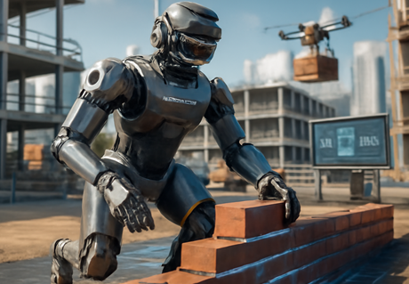

Embodied Intelligent Construction 具身智能建造

Embodied Intelligent Construction
Embodied Intelligent Construction is a cutting-edge interdisciplinary concept that integrates artificial intelligence, robotics, building science, and cognitive science. It represents an important direction for the future development of intelligent construction.
1. Embodied Intelligence
"Embodied intelligence" originates from cognitive science and artificial intelligence; its core idea is: Intelligence arises not only from the brain (or algorithms) but also from real-time interactions between the body and the environment. In other words, an intelligent agent (such as a human, animal, or robot) is "smart" not only in its "brain" (e.g., AI algorithms) but also in its bodily structure, perceptual abilities, modes of motion, and how it interacts with its surroundings.
2. Embodied Intelligent Construction
Applying the concept of "embodied intelligence" to architecture and construction yields "embodied intelligent construction." It refers to: Using agents with perception, decision-making, and action capabilities (such as construction robots, drones, and wearable devices) to complete construction tasks autonomously or semi-autonomously through real-time interaction between their "bodies" and the built environment. The core of embodied intelligent construction lies in the dynamic interaction between construction equipment and building materials, which is a multi-modal perception and mutual feedback process of the construction process.
3. Key Components of Embodied Intelligent Construction
(1) Non-contact Perception: Obtaining the intrinsic properties of materials without contacting the detected materials. For example, using laser scanning, infrared imaging and other technologies to acquire information such as material structure and density.
(2) Passive Perception: Obtaining the internal characteristics of materials only through the natural feedback of materials without actively detecting them. For example, perceiving the hardness, elasticity and other properties of materials through force feedback.
(3) Material Understanding: Based on the above perception, understanding the spatiotemporal evolution process of materials. For example, predicting the solidification process of concrete, the stress change of steel, etc.
(4) Environmental Perception: Real-time modeling of complex construction scenarios. For example, building a digital twin model of the construction site through a sensor network and updating the environmental status in real time.
(5) Construction Decision-Making: Immediate construction decisions based on environmental and material understanding. For example, adjusting construction paths and optimizing construction parameters based on real-time perception data.
具身智能建造
具身智能建造是一个融合人工智能、机器人学、建筑科学和认知科学的前沿交叉概念，代表了智能建造未来发展的重要方向。
1. 具身智能
具身智能源于认知科学和人工智能，其核心思想是：智能不仅来自大脑（或算法），更源于身体与环境之间的实时互动。换句话说，智能体（如人类、动物或机器人）的"智能"不仅体现在其"大脑"（如AI算法）中，还体现在其身体结构、感知能力、运动方式以及与周围环境的互动方式中。
2. 具身智能建造
将"具身智能"概念应用于建筑和建造领域，便产生了"具身智能建造"。它指的是：利用具有感知、决策和行动能力的智能体（如建造机器人、无人机和可穿戴设备），通过其"身体"与建造环境之间的实时互动，自主或半自主地完成建造任务。具身智能建造的核心是建造装备与建造材料之间的动态互动，是对建造过程的多模态感知与互馈。
3. 具身智能建造的重要组成部分
(1) 非接触感知：不接触被检测的材料，获得材料的内在特性。例如，通过激光扫描、红外成像等技术获取材料的结构、密度等信息。
(2) 被动感知：不主动探测材料，仅通过接触材料的自然反馈，获得材料的内部特征。例如，通过力反馈感知材料的硬度、弹性等特性。
(3) 材料理解：基于上述感知，理解材料的时空演化进程。例如，预测混凝土的凝固过程、钢材的应力变化等。
(4) 环境感知：对复杂建造场景进行实时建模。例如，通过传感器网络构建施工现场的数字孪生模型，实时更新环境状态。
(5) 建造决策：基于环境与材料理解的即时建造决策。例如，根据实时感知数据调整施工路径、优化施工参数等。